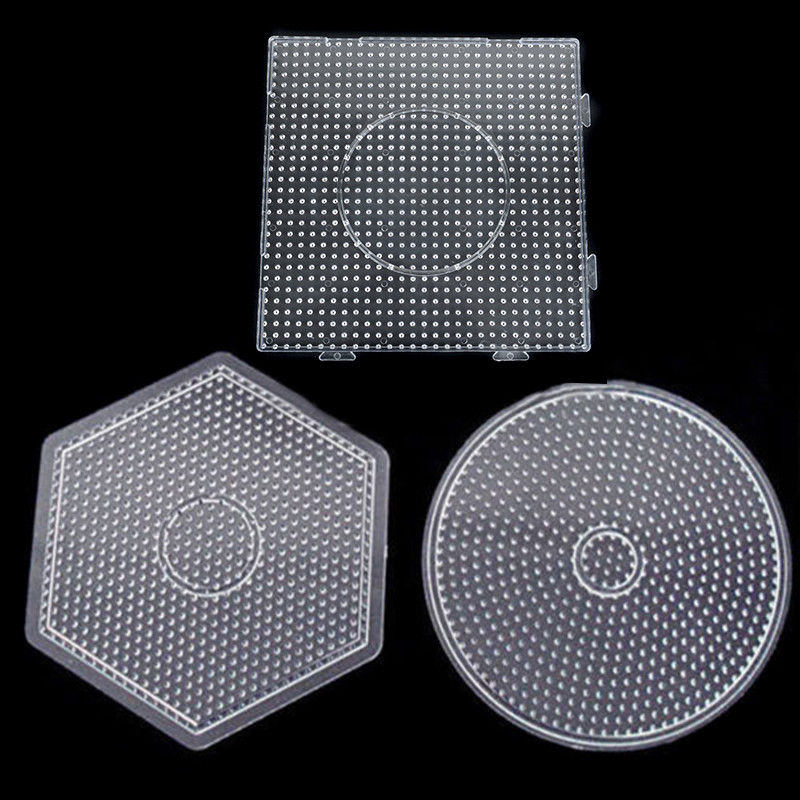
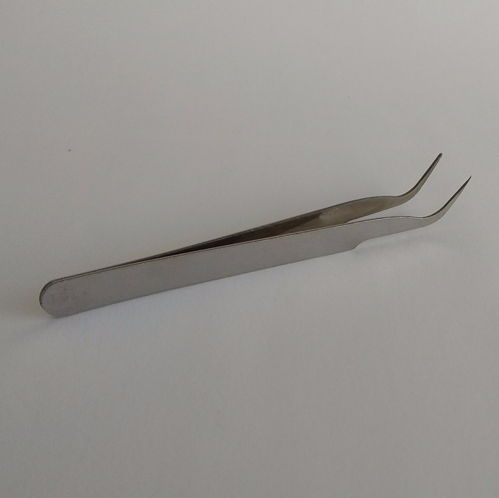

Hama Beads
Voltar para a Página Inicial
O que são Hama Beads?
Hama Beads são peças plásticas coloridas semelhantes a miçangas utilizadas para "dar vida" a imagens 2D pixeladas. Esse tipo de atividade artesanal é febre na Europa, principalmente na Inglaterra, sendo, assim, novidade no Brasil. O material necessário para a confecção das peças consiste em: placas chamadas "pegboards", pinças, ferro de passar roupas, folhas de papel manteiga e hama beads!!
Desenvolver produtos com hama beads é bastante terapeutico! Você pode adquirir o material necessário e conhecer mais sobre essa técnica através do site oficial: hamabeads.com

